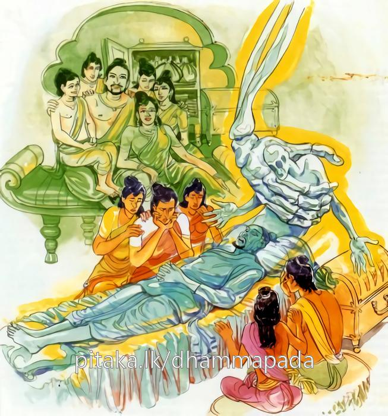

5-3 තුන්වන ආනන්ද සිටුහුගේ වස්තුවයි.
මෙම කතාව සද්ධර්ම සාගරයෙන් ද කියවන්න.
පුත්තා මත්ථි ධනම්මත්ථි ඉති බාලො විහඤ්ඤති
අත්තා හි අත්තනො නත්ථි කුතො පුත්තා කුතො ධනං.
‘මට පුත්තු ඇත, මට ධනය ඇතැ’යි මෙසේ අඥාන තෙමේ දුකට පැමිණේ. ඒ එසේ ම ය. තෙමේත් තමහට නැත. පුත්රයෝ කොයින් ද? ධනයෙක් කොයින් ද?

පුත්තාමත්ථි ආදි මේ ධර්මදේශනාව ශාස්තෘන්වහන්සේ සැවැත්නුවර වාසයකරන කාලයෙහි ආනන්දසිටුවරයා අරභයා දේශනාකළ සේක. සැවැත් නුවර සතළිස්කෝටියක් ධනය ඇති එහෙත් මහාමසුරු ආනන්දසෙට්ඨි නමින් සිටුවරයෙක් විය. හෙතෙම අඩමසින් අඩමසට නෑයන් රැස්කරවා මූලසිරි නම් පුතාට තුන්වේලෙහි මෙසේ අවවාද දුන්නේය. පුත මේ සතළිස්කෙළක් ධනය මහත් ධනයක් සේ නොසලකව. තියෙන ධනයෙන් කිසිවක් නොදිය යුතුය. අලුත් අලුත් ධනය නිපදවිය යුතුය. එක එක කහවණුව බැගින් වියදම් කළත් ධනය ක්ෂයවී යන්නේය. එහෙයින්
කරඬුවෙ ඇති අඳුන්
ගානා කල්හි අඩුවේ
කුඩ කුඩා වනමුත්
බඳිනා තුඹස ලොකු වේ
මල්රොන් පොදක් ගෙන ගොස්
මහ මීයක් බඳින සේ
නුවණින් යුතුව ගෙදරක
විසීමයි පණ්ඩිතකම
සිටුවරයා පසු කලක තමන්ගේ පංචමහා නිධාන ගැන පුතාටත් නොකියා සිතේ තිබුණු මසුරුමලයෙන් යුතුවම කළුරියකොට ඒ නුවරම තිබුණු සැඩොල් පවුල් දහසක් ඇති වාසල් ගමක එක් චණ්ඩාලියකගේ කුස පිළිසඳ ගත්තේය. රජු ඔහුගේ මරණ ගැන අසා මූලසිරි පුතා ගෙන්වා ඔහුට සිටු තනතුරු දුන්නේය.
එකට බැළමෙහෙකොට ජීවත්වන ඒ සැඩොල්පවුල් දහසට ඔහු පිළිසිඳ ගැනීමෙන් පසු බැළමෙහෙ නොලැබී ගියේය. යැපෙන පමණට අනුන්ගෙන් බත්පිඬක් පමණකුදු නොලැබිණි. ගම්වැසියෝ එකතුව දැන් අපි වැඩ කළත් බත්පිඬුවක් පමණවත් නොලබමු. අප අතර කාලකණ්ණියකු විය යුතුයයි දෙකොටසකට බෙදුණහ. එයින් බැළකම් නොලබන පිරිස යළිත් දෙකොටසකට ආදි වශයෙන් ඔහුගේ මවුපිය දෙදෙන වෙන්වන තුරුම බෙදිබෙදී ගොස් මේ ගෙදර කාලකණ්ණියා ඉපදී ඇතැයි ඒ බවදැන වෙන්කර දැමූහ. ඔහු ඇගේ කුස පිළිසිඳ ගත්දාපටන් යැපීම් පමණටවත් ආහාර ලබාගත්තේ ඉතා අසීරුවෙනි. ඈ පුතෙක් වැදුවාය. ඔහුගේ අත් පා කන් නාසාද කටද නියමිත තැන්හි නියම ලෙස පිහිටා නොතිබිණි. ඔහු මෙසේ අංගවිකල භාවයෙන් යුක්තව පාංශුපිශාචයෙකු මෙන් අතිශයින්ම විරූපියෙක් විය. එසේවුවත් ඔහුගේ මව ඔහු අත් නොහළේය. තම කුසයේ උපන් දරුවා කෙරෙහි මවගේ ස්නේහය ඉතා බලවත්ය.
ඈ ඔහු ඉතා දුකසේ පෝෂණය කරමින් ඔහුත් රැගෙනයන දවසෙහි කිසිවක් නොලබයි. ඔහු ගෙදර නවතා තමන් තනියම යන දවසෙහි බැළමෙහෙ ලැබෙයි. ඉන්පසු දරුවා තනියම ඇවිද ආහාර සොයාගෙන ජීවත්වීමට හැකිවූ අවස්ථාවෙහි කබලක් අතට දී දරුව, ඔබ නිසා අපි මහත්සේ දුක් වින්දෙමු. දැන් ඔබ පෝෂණය කිරීම අපට අපහසුය. මෙනුවර යාචක මඟියන් උදෙසා බත් පිළියෙලකරන තැන් ඇත. එහි ගොස් ජීවත් වන්නැයි කියා ඔහු පිටත්කර හැරියාහුය. හෙතෙම ගෙවල් පිළිවෙලින් ඇවිදිමින් ගොස් පෙර ආනන්ද සිටුකාලයේ නැවතී සිටිය ගේ ළඟට ගොස් ජාතිස්මරණය ලැබී තම ගෙට පිවිසියේය. දොරටු තුනකම සිටි කිසිවෙක් ඔහු හැඳින නොගත්තෝය.
සිව්වෙනි දොරටුවෙහි හුන් මූලසිරි සිටුපුතා දැක උද්වේගයට පැමිණ හැඬුවේය. ඉන්පසු ඔහුට සිටුවරයාගේ මිනිස්සු කාලකණ්ණිය පලායවයි තළමින් ගෙනගොස් කසළගොඩට දැමූහ. ශාස්තෘන්වහන්සේ පසුපස එන ආනන්ද තෙරණුවනුත් සමග පිඬු පිණිස හැසිරෙන අතර තෙරුන් දෙස බැලූහ. ආනන්ද හිමියන් විසින් ඒ ගැන අසාසිටි කල ඒ ප්රවෘත්තිය ප්රකාශ කළහ.
තෙරණුවෝ මූලසිරි කැඳවූහ. තවත් මහාජනයාද එහි රැස්වූහ. ශාස්තෘන්වහන්සේ මූලසිරිගෙන් මොහු හඳුනන්නේදැයි ඇසූ විට නොද්නනෙමියි කීකල මේ ඔබේ පියා වන ආනන්ද සිටුවරයායයි වදාරා නොඅදහන කල්හි, ආනන්ද සිටුවරය, ඔබේ පුතාට පංචමහානිධාන ඇති තැන් කියවයි එය කියාදෙවා අඳුනා ගැනීම තහවුරු කළහ. හෙතෙම බුදුන් සරණ ගියේය. බුදුහු ඔහුට දහම් දෙසමින් මේ ගාථාවද ප්රකාශකළසේක.
මට ධනය සහ පුතුන් ඇතැයි හඟින අනුවණයා
එයින් වැනසී යනමුත් තමනට තමන් මිස
කිසිවෙක්ම නැත සැබවින් එසේ සලකන කල
පුතුන් හෝ මොන ධනයද ඒවා කොහෙන් ලබමුද?
එහි අර්ථය නම් පුත්තා මෙ අත්ති ධනං මෙ අත්ථි ඉති බාලො යනු පුත්රතෘෂ්ණාවෙනුත් ධනතෘෂ්ණාවෙනුත් වැනසෙයි, විනාශවෙයි. විහඤ්ඤති දුකට පැමිණෙයි. මාගේ පුත්තු වැනසුණාහ. නැසෙන්නාහ, වැනසෙත්, නසින්නාහ යනුවෙන් නැසෙයි. ධනය පිළිබඳවද මෙසේමය. මෙසේ සය ආකාරයකින් වැනසෙයි. පුත්රයන් පෝෂණය කරන්නෙමියි රෑ ද දවල්ද ගොඩ ජලමාර්ග ආදියෙහි නානාප්රකාරයෙන් වෑයම් කරමින් නැසෙයි. ධනය රැස්කරන්නෙමියි කෘෂිවණික් කර්මාන්තයන් කරමින්ද නැසෙන්නේමය. මෙසේ නැසෙන වෙහෙසෙන්නාටද තමන් තමන්ටම අයත් නොවෙයි. ඒ වෙහෙසවීමෙන් දුකට පැමිණෙන තමන් සුවපත් කළනොහැකි වනහෙයිනුත් ඔහුට තමන් තමන්ටම නැතිවෙයි. මරණ මංචකයෙහි (ඇඳෙහි) වැතිරගත්කල මරණීයවේදනාවලින් ගිනිදැලින් මෙන් අතිශයින්ම දැවෙන්නාටද ශරීර හන්දි ආදිය සිදුරු වන කල්හිද, ඇට සැකිලි බිඳී යන විටද, ඇස පියාගත් විට පරලොවත්, ඇස ඇර බලන විට මෙලොවත් බලන්නාටද දවස් පතා දෙවරක් නාවා තෙවරක් කවාපොවා සුවඳ මල් ආදියෙන් සරසවා දිවි ඇතිතාක් උපස්ථානකොට නමුත් දුකෙන් රැකගැනීමට අසමත්වන හෙයිනි. අත්තාහි අත්තනො නත්ථි කුතො පුත්තා කුතො ධනං යනු පුතුන් හෝ ධනය හෝ ඒ අවසන් අවස්ථාවේ කුමක් නම් කරන්ටද? කවදාවත් කිසිවෙකුට කිසිවක්ම නොදී පුතුන් සඳහා ධනය රැස්කර තැබූ ආනන්ද සිටුවරයාටද කලින්ම හෝ මරණාසන්න මොහොතේ හෝ දැන් මේ දුකටපත් අවස්ථාවේ හෝ පුත්රයෝ කොහිද, රැස්කළ ධනය කොහිද, පුතුන් හෝ ධනය හෝ ඒ අවස්ථාවේ ඔහුගේ දුක නැති කෙළේද, සැපක් ගෙනදීමට සමත් වූයේද?
දේශනා කෙළවර අසූසාරදහසක් ප්රාණීන්ට ධර්මාවබෝධය විය. දේශනාව මහාජනයාට සාර්ථකවිය.